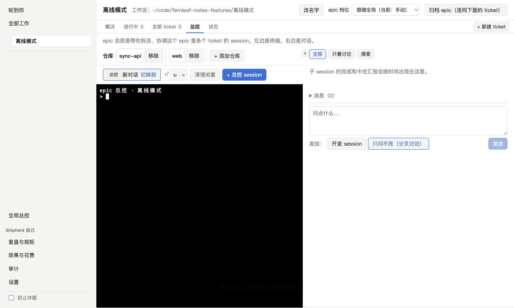
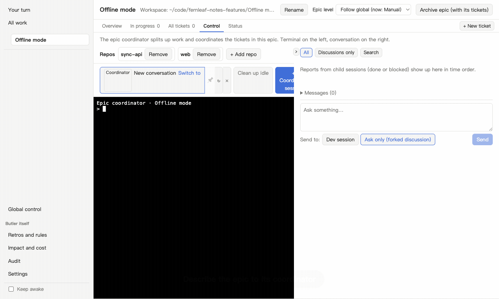
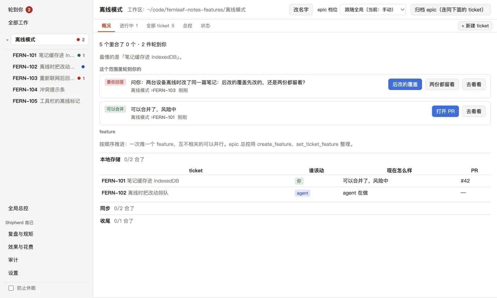
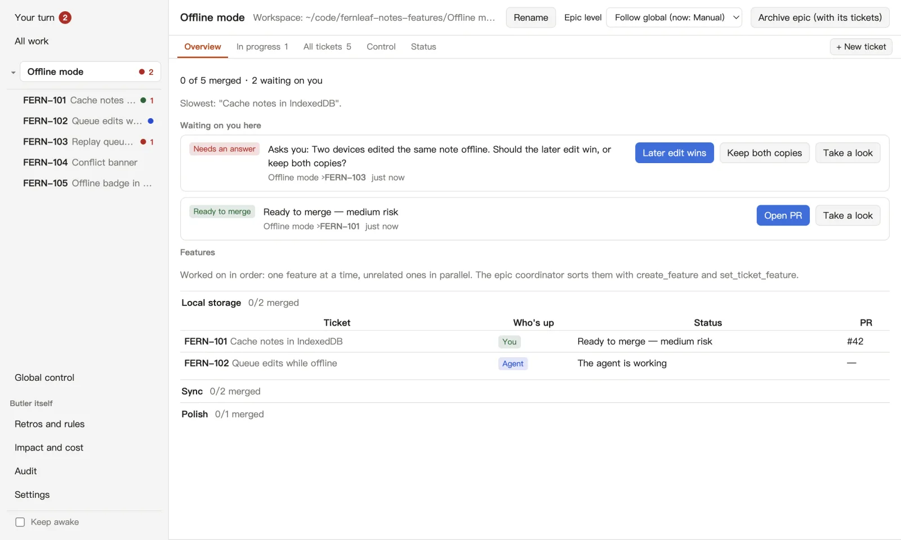
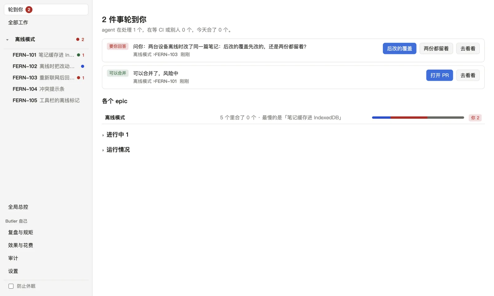
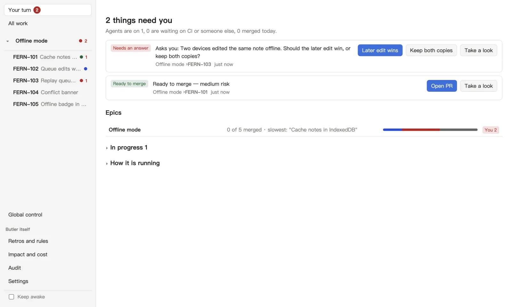

和一个总控对话。
它替你管好各个 Claude Code session，只在轮到你的时候叫你。
Talk to one coordinator.
It runs your Claude Code sessions and only pings you when it's your turn.
你已经在好几个终端里开着 Claude Code，常常记不清哪个在等你。用 Shipherd，你把一块活讲给 epic 的总控听：它拆成几个 ticket，每个 ticket 有自己的 session 和 git worktree，要你处理的事都汇到一个页面上。 You already run Claude Code in several terminals and lose track of which one is waiting on you. With Shipherd you describe a body of work to an epic coordinator. It splits the work into tickets, gives each ticket its own session and git worktree, and puts everything that needs you on one page.
MIT 开源 · 自己没有模型，也没有 API key · 用你自己登录的 claude MIT licensed · no model or API key of its own · runs your own logged-in claude
epic 记忆 · 结账改版Epic memory · Checkout
实际用法How it's used
交出去的是一块活，不是一条提示词Hand over a body of work, not a prompt
只是并排开几个 session 的话，总控就是你自己：你来拆活，给每个 session 写提示词，盯着每个终端，还要想清楚哪个 PR 先合。在 Shipherd 里，这些交给 epic 的总控。它也是一个 Claude Code session，看得到这个 epic 的每个 ticket，你和它把活商量清楚就行。 With sessions side by side, you are the coordinator: you split the work, write a prompt for each session, watch every terminal and work out which PR merges first. In Shipherd, an epic coordinator takes that over. It is a Claude Code session that sees every ticket of the epic, and you talk the work through with it.


-
1
建一个 epic，选好仓库Create an epic and pick its repos
在「全部工作」页点「+ 新建 epic」，起个名字，选好仓库；也可以直接选放着前后端仓库的那个文件夹。ticket 的 worktree 都放在 epic 自己的工作区里，同一个仓库里的几个 ticket 可以同时推进。On All work, click + New epic, name it and pick its repos, or the folder that holds them, say a frontend and a backend. Every ticket's worktrees go into the epic's own workspace, so several tickets in one repo can move at once.
-
2
把活讲给总控听Describe the work to the coordinator
在 epic 的「总控」tab 里点「+ 总控 session」，把要做的活讲给它听。总控建好 ticket，再把它们分进 feature：feature 只是 epic 里轻量的分组，总控一次推一个，互不依赖的同时推。On the epic's Control tab, click + Coordinator session and describe the work. The coordinator creates the tickets and sorts them into features: light groups inside the epic that it pushes forward one at a time, running independent ones side by side.
create_ticketcreate_feature -
3
它在每个 ticket 里开 sessionIt starts a session in each ticket
总控在每个 ticket 里开一个 session，各有各的 git worktree，再把任务派下去。它看得到每个 session 在做什么，通过信箱给它们发消息，做完的会关掉。每个 session 仍然是真正的 Claude Code 终端，你随时可以看、可以接手。The coordinator opens a session in each ticket, each in its own git worktree, and hands it its task. It sees what every session is doing, messages them through their mailboxes and closes the ones that are done. Every session is still a real Claude Code terminal you can watch and take over.
start_sessionlist_sessionssend_message -
4
你回答问题，点合并You answer, and you click merge
提问、权限确认、可以合并的 PR，都变成「轮到你」页上的卡片。合并仍然由你来点。每个工作日在你选定的时间（默认 16:00），Shipherd 用你自己登录的 claude 给有动静的 ticket 写一份交接（handoff），作为它的状态。Questions, permission prompts and PRs ready to merge become cards on Your turn. You still click merge. Every working day, at a time you choose (4 pm by default), Shipherd asks your own logged-in
claudeto write a handoff for every ticket that had activity, which becomes its status.
合并之前先检查，分支不撞车Merges are checked, so branches don't collide
Shipherd 盯着它开的 session，每次往目标分支合并之前都先用 git 检查。两个分支冲突时，先合的放行，另一个 ticket 合并前会被告知要先 rebase；和一个正在进行的合并冲突时，要等那个合完。Shipherd watches the sessions it opens and checks every merge into a target branch with git before it happens. When two branches conflict, the first to merge goes ahead and the other ticket is told to rebase before it merges; a merge that conflicts with one already under way waits until that one lands.
epic 页按 feature 的顺序列出 ticket，每一行写着现在轮到谁：你、agent，还是 CI 或某位 reviewer。The epic page lists the tickets by feature, in order, and each row says whose turn it is: yours, an agent's, or CI's or a reviewer's.


gh 读取。Shipherd 也没有自己的 Jira、GitHub 或 Claude 登录。
Jira, Linear or GitLab are read by your own Claude Code through its own MCP servers; PRs are read with your gh. Shipherd has no Jira, GitHub or Claude login of its own.
共享记忆Shared memory
session 之间共享记忆Sessions share memory
Shipherd 内置本地的 StateCore 记忆，它开的每个 session 都接上。session 用 remember 存，用 recall 读。epic 里一个 session 把约定存进 epic 记忆，比如一份 API 约定，Shipherd 会把它送进这个 epic 里其他正在跑的 session 的信箱。
Shipherd embeds a local StateCore memory and connects every session it opens. A session saves with remember and reads with recall. When a session in an epic saves a convention to the epic's memory, such as an API contract, Shipherd delivers it to the mailboxes of the epic's other running sessions.
shipherd-featureepic 里各个 ticket 共用的约定，比如 API 约定或命名规则，能放大约 60 条。总控和 epic 里每个 ticket 的 session 共用；新存的约定会送到其他正在跑的 session。epic 里的 feature 只是分组，没有自己的记忆。Conventions shared across the epic's tickets, such as an API contract or a naming rule; it holds about 60. The coordinator and every ticket session of the epic share it, and a new convention is delivered to the other running sessions. Features inside an epic are only groups and have no memory of their own.
shipherd-memory这个 ticket 的进度、决定、待办和每晚的交接。This ticket's progress, decisions, follow-ups and nightly handoffs.
shipherd-memory每个 ticket 一份，它的几个 session 共用。One per ticket, shared by that ticket's sessions.
shipherd-workspace在一个 ticket 里踩过的坑、摸清的环境细节，换到别的 ticket 也读得到。Gotchas and environment details learned in one ticket, readable from any other.
一个具体的例子A concrete example
后端 session 改完接口就记下一句。Shipherd 把它送进同一个 epic 里其他在跑的 session 的信箱，前端 session 在下一次调用工具时收到，照着改。中间不用人转述。The backend session notes the API change once it lands. Shipherd puts it in the mailbox of the epic's other running sessions, and the frontend session gets it at its next tool call and follows it. Nobody relays it by hand.
长 session 交接以后接着做Long sessions hand off and carry on
session 的上下文太长时，Shipherd 先让它写一份交接，等记忆存好，再把它清空。清空后它从记忆里找回交接，接着做手上的事，而不是停下来等你下一句。When a session's context grows too long, Shipherd has it write a handoff, waits until memory has stored it, and clears the session. It recalls the handoff and carries on with what it was doing instead of waiting for your next instruction.
总控看得到每个 session 在做什么The coordinator sees what every session is doing
总控用 list_sessions 看每个 session 在写代码、跑测试、等 CI 还是在等你，用 session_activity 看某一个的最后一段命令输出，用 send_message 往它的信箱里放一句话，在干活时也送得到。The coordinator uses list_sessions to see whether each session is writing code, running tests, watching CI or waiting for you, session_activity for one session's last command output, and send_message to drop a message in its mailbox, even while it is working.
记忆在你自己的电脑上The memory lives on your computer
这些记忆存在本机的 SQLite 里，在 ticket 页「记录」tab 的「记忆」一节能看到每一条的来历。StateCore 不调用任何模型，记忆 server 也拿不到模型 key。It is stored in local SQLite, and the Memory section of a ticket's Log tab shows each entry's history. StateCore calls no model, and the memory servers get no model API key.
「轮到你」页The Your turn page
在一个地方回答Answer in one place
session 需要你的时候，侧栏第一项「轮到你」页上就会出现一张卡片：用 ask_user 问你的问题、权限确认、可以合并的 PR、请你 review 的 PR、没人推进的 PR。「要我继续吗？」这种回复不算。Whenever a session needs you, a card shows up on Your turn, the first entry in the sidebar: a question asked with ask_user, a permission prompt, a PR ready to merge, a review requested from you, a PR nobody is on. A reply such as "Shall I continue?" doesn't count.
停住不动的 session 也有一张卡片。它的 transcript、输出和 CPU 都不再变化时，Shipherd 用你自己的 claude 问一次它是不是真卡住了；是的话，卡片上写出可能的原因，带「去看看」「开修复 session」「没事，忽略」。不经你点击，什么都不会去修。A session that has stopped moving gets a card too. When its transcript, output and CPU stop changing, Shipherd asks your own claude whether it is really stuck; if so, the card gives the likely cause with Take a look, Open a fix session and It's fine, ignore. Nothing is fixed without your click.
点卡片上的按钮回答，答案会送进那个 session 的信箱；要多说几句，就在它的终端里打。卡片下面，「进行中」列出每个在跑的 session 在做什么，「运行情况」里有实况和一行近 7 天的 token 用量。Answer with a button on the card and it goes into the session's mailbox; for anything longer, type in its terminal. Below the cards, In progress lists what every running session is doing, and How it is running holds the Live view and a line of token usage for the last 7 days.


和并排开 session 比Compared with sessions side by side
别的工具管 session，Shipherd 管的是活Other tools manage sessions. Shipherd manages the work.
同时开好几个 Claude Code session、每个跑在自己的 git worktree 里，现在已经很常见：Claude Code 官方桌面版能做，Conductor、Claude Squad 这类工具也能做。Shipherd 也这样跑 session，再把剩下落在你身上的活接过去。 Running several Claude Code sessions side by side, each in its own git worktree, is common now: Claude Code's own desktop app does it, and so do tools like Conductor and Claude Squad. Shipherd runs sessions that way too, then takes over the jobs that are left to you.
gh pr merge 时你点了同意（除非你自己的 Claude Code 设置已经放行了它）。每一个对外动作都记在「审计」页上。
Settings › Automation has a level. Manual, the default, does nothing on its own: comments, CI, stacks and intake wait for you; Semi-automatic passes PR comments to the session, reruns a flaky CI failure once, and rebases and pushes stacks. Either way, Shipherd never merges by itself: a merge is your click on GitHub, or your yes when a session asks to run gh pr merge (unless your own Claude Code settings already allow it). Every outward action is listed on the Audit page.
本地优先Local-first
它是你电脑上的一个应用，不是一项服务An app on your computer, not a service
Shipherd 自己没有模型，也没有 API key：后台的活（交接、总结、卡住检测）都经你自己的 claude 做，用的是你自己的登录。它也不发遥测。
Shipherd has no model or API key of its own: its background work (handoffs, summaries, stuck checks) runs through your own claude, signed in as you. It sends no telemetry.
数据在本机的 SQLite 里Data in local SQLite
ticket、session、交接、设置在 ~/.shipherd/app.db，记忆在 ~/.shipherd/statecore/statecore.db。装新版本时这些都保留。Tickets, sessions, handoffs and settings are in ~/.shipherd/app.db; memory is in ~/.shipherd/statecore/statecore.db. Both are kept when you install a new version.
数据怎么离开你的电脑How data leaves your machine
只经你自己的 claude、git 和 gh，另外就是你自己设了的通知 webhook。经 gh 的对外动作（比如回复 PR 评论）每一种都有自己的开关，默认全关，做了的都记在「审计」页上。Only through your own claude, git and gh, plus a notification webhook if you set one up. Outward actions through gh, such as replying to a PR comment, each have their own switch, all off by default, and each one taken is listed on the Audit page.
没有账号，没有遥测No accounts, no telemetry
没有账号，不做授权校验，也没有自己的 Jira、GitHub 或 Claude 登录。每天一次经你的 gh 查有没有新版本，只提示你，不下载不安装，可以关掉。No accounts or license checks, and no Jira, GitHub or Claude login of its own. Once a day it asks GitHub through your gh whether a newer release is out and only tells you. It never downloads or installs anything, and you can turn it off.
联网代码由 lint 把关Network code, guarded by a lint rule
除了通知 webhook 的发送，以及 127.0.0.1 上给共享 MCP 用的监听，Shipherd 没有自己的联网代码。这一点由一条 lint 规则保证。Apart from the notification webhook sender and the shared MCP's listener on 127.0.0.1, Shipherd has no network code of its own. A lint rule enforces this.
只在你点了之后改 Claude Code 配置Claude Code config changes only when you click
点安装 hook 时（向导里的「安装并继续」，或「设置 → 健康检查 → 安装 / 修复」），Shipherd 往用户级 settings.json 加四个 hook（第一次会先备份这个文件），再写一个 /handoff 命令，你原有的 hook 和命令都保留；「设置 → 健康检查 → 卸载」可以移除。记忆不用 claude mcp add 注册，而是在它启动的每个 session 上传 --mcp-config。When you click the hook install, Shipherd adds four hooks to your user-level settings.json (backing the file up the first time) and writes a /handoff command, keeping your other hooks and commands. Settings → Health check → Uninstall removes them. Memory is never registered with claude mcp add; Shipherd passes --mcp-config to each session it starts.
反馈由你自己发Feedback you send yourself
「帮助 → 发送反馈…」（或「设置 → 关于」里的按钮）会在浏览器里打开填好的 GitHub issue，由你自己提交。诊断可选，脱敏后先给你看。Shipherd 自己不往外发任何东西。Help → Send Feedback… (or the button under Settings → About) opens a filled-in GitHub issue in your browser, and you submit it. Diagnostics are optional, redacted and shown to you first. Shipherd sends nothing on its own.
安装Install
下载、放行、跑一遍向导Download, allow it, run the wizard
安装包在 GitHub 的 Releases 页上。目前的构建还没有代码签名，所以浏览器和系统都会提醒你，第一次打开要多做一步，下面写了怎么放行。 The installers are on the GitHub Releases page. The builds are not code-signed yet, so your browser and OS will warn you and the first launch needs one extra step. Here is how to allow it.
需要You need
- Apple 芯片的 macOS，或 Windows 10/11 x64。Intel Mac 可以从源码构建。macOS on Apple silicon, or Windows 10/11 x64. Intel Macs can build from source.
- 装好并登录的 Claude Code：先在终端里运行一次
claude登录，claude --version要能跑Claude Code installed and logged in: runclaudeonce in a terminal to log in, andclaude --versionmust work PATH上有 Git；Windows 上装 Git for WindowsGit onPATH; on Windows, Git for Windows- 可选：登录好的 GitHub CLI（
gh）。不装 session 照样能用，只是 PR、CI、review 相关的功能不工作Optional: the GitHub CLI (gh), logged in. Sessions work without it, but PR, CI and review features don't - 可选：在 Claude Code 里配好 tracker 的 MCP（Jira、Linear、GitLab…），交接才能读到 ticket 状态Optional: a tracker MCP server (Jira, Linear, GitLab, …) in Claude Code, so handoffs can read ticket status
macOS Shipherd-x.y.z-arm64.dmg
- 打开
.dmg，把 Shipherd 拖进「应用程序」。Open the.dmgand drag Shipherd into Applications. - 打开 Shipherd，macOS 会拒绝，提示 Apple 无法验证这个 App。Open Shipherd. macOS refuses: it says Apple cannot verify the app.
- 打开「系统设置 → 隐私与安全性」，往下滚到关于 Shipherd 的提示，点「仍要打开」并确认。macOS 14 及更早版本上，也可以在「应用程序」里右键 Shipherd，选「打开」，再点一次「打开」。或者在终端里运行：Open System Settings → Privacy & Security, scroll to the message about Shipherd, click Open Anyway and confirm. On macOS 14 and earlier you can instead right-click Shipherd in Applications, choose Open, then Open again. Or, in Terminal:
xattr -dr com.apple.quarantine /Applications/Shipherd.app如果 macOS 说 Shipherd「已损坏，无法打开」，就没有「仍要打开」按钮，用上面的终端命令。每次下载新版本后都要重复一遍。If macOS says Shipherd "is damaged and can't be opened", there is no Open Anyway button; use the Terminal command. Repeat this after every new download.
Windows Shipherd-Setup-x.y.z.exe
- 运行
Shipherd-Setup-x.y.z.exe。如果 Edge 警告这个下载，在下载项的「…」菜单里选「保留」。RunShipherd-Setup-x.y.z.exe. If Edge warns about the download, choose Keep in the download's … menu. - SmartScreen 提示「Windows 已保护你的电脑」时，点「更多信息 → 仍要运行」。When SmartScreen says "Windows protected your PC", click More info → Run anyway.
- 选「仅为我安装」（不需要管理员权限）。Pick "only for me" (no admin rights needed).
如果开着 Windows 11 的「智能应用控制」，它会拦下未签名的应用，而且没法放行，开着它时装不了 Shipherd。关掉它之前请先看 Microsoft 的说明。If Windows 11 Smart App Control is on, it blocks unsigned apps with no way around it, so Shipherd can't be installed while it is on. Check Microsoft's documentation before you turn it off.
PATH 和常见的安装位置找 claude，claude 或 gh 看起来没登录时会提示。第二步安装 hook 和 /handoff 命令：这些 hook 只往 Shipherd 的 inbox 文件夹里放小 JSON 文件，从不访问网络。哪一步过不去，点「卡住了？告诉我们」会打开反馈表单，帮你填好一个 GitHub issue。tracker 工具和权限档案之后在设置页里配。升级就是下载新版本装在旧版上，~/.shipherd 里的数据保留。细节见 README 的 安装 和 首次运行。
Step one checks Claude Code: it finds claude on your PATH or in the usual install folders, and tells you if claude or gh doesn't look logged in. Step two installs the hooks and the /handoff command; the hooks only drop small JSON files into Shipherd's inbox folder and never touch the network. If a step fails, Stuck? Tell us opens the feedback form, which fills in a GitHub issue for you. Tracker tools and the permission profile are set later in Settings. To upgrade, install the new version over the old one; your data in ~/.shipherd is kept. Details are in the README's Install and First run sections.
如果你也同时开着好几个 Claude Code、已经顾不过来，可以试试看。If you run several Claude Code sessions and keep losing track of them, give it a try.
有问题或想法？去 GitHub Discussions 问，或者在 Shipherd 里用「帮助 → 发送反馈…」。Questions or ideas? Ask in GitHub Discussions, or use Help → Send Feedback… in Shipherd.